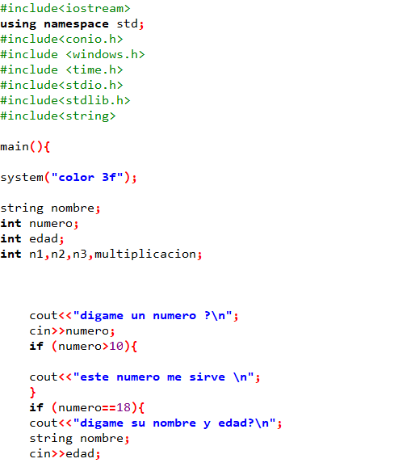
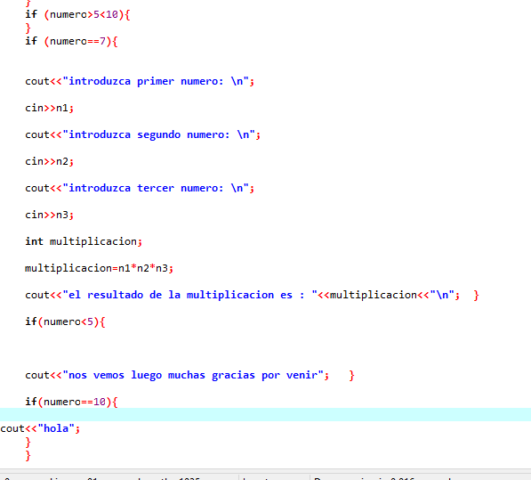

<!DOCTYPE html>
<html>
<head>
	<title>INDEX.HTML</title>
</head>
<body>

</body>
</html>
<html><head>
    <center><font size="100px" color="#000000">Actividad 3</font></center>
<hr color="#FAFAFA" size="7px"> 
<body bgcolor="#58FAF4">

<div style="position: absolute;top:90px;left:100px"></div>

<div style="position: absolute;top:100px;left:650px"></div>

<div style="position: absolute;top:700px; left:230px;border :solid black"><video src="crack22.webm" controls autoplay muted ></video></div>

 <div style="position: absolute;top: 1250px; left: 400px;width: 580px ;height: 340px;background: white;border:solid black;font-family: COOPER BLACK;font-size:30px ">
      
    la actividad estuvo muy buena ya que aprendi a programar multiplicaciones y condiciones que el usuario daba y el programa se lo respondia automaticamente ya que con if se pueden hacer cosas muy divertidas como por ejemplo si el numero que da el usuario es igual a 4 lo invita a un viaje y si es diferente a 4 no lo invita.

   </div> 